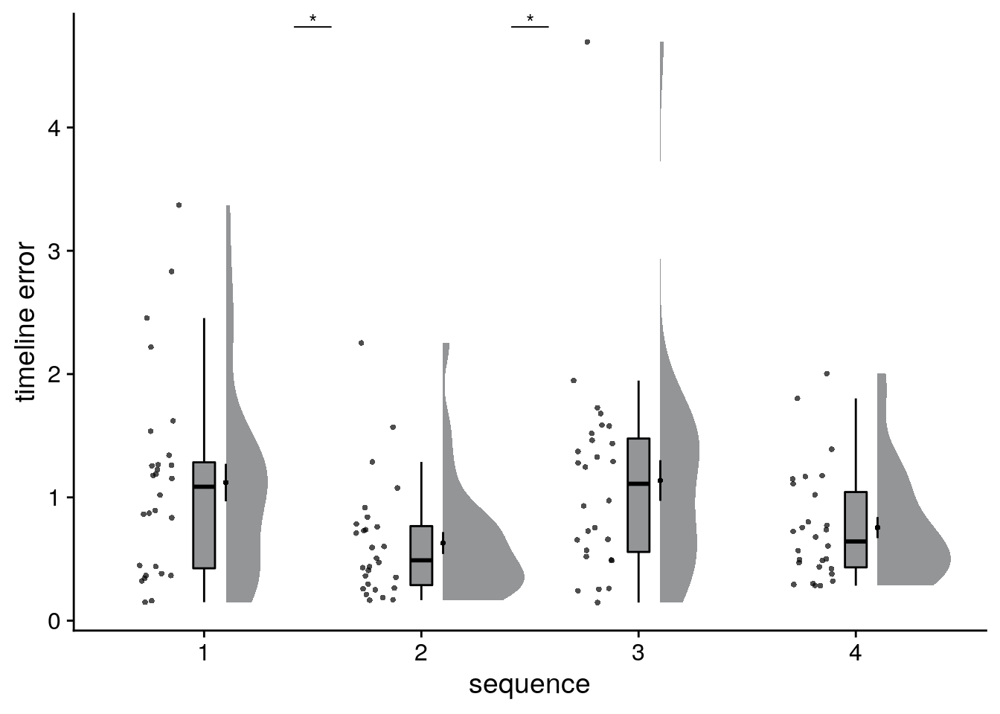
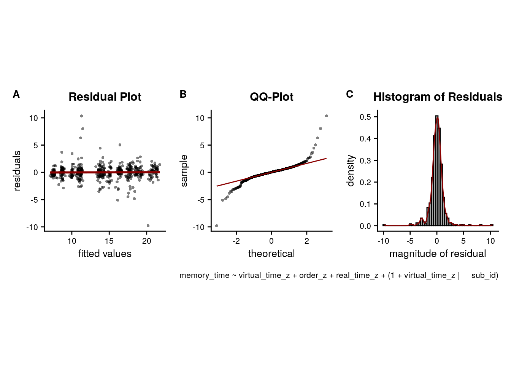

5 Behavioral Analysis
We are now ready to analyze and plot the behavioral data. Let’s start with a quick recap of the data and tasks we have:
Sorting Task
The day sorting task (Figure 1D) was performed in front of a computer screen. The 20 event images from the day learning task were presented on the screen in a miniature version. They were arranged in a circle around a central area displaying 4 rectangles. Participants were instructed to drag and drop all events of the same sequence into the same rectangle with a computer mouse. Participants freely chose which rectangle corresponded to which sequence as the sequences were not identifiable by any label and were presented in differing orders across mini-blocks during learning.
Thus, in analysis, we took the grouping as provided by the rectangles and assigned the four groups of events to the four days in a way that there was maximal overlap between actual days and sorted days. We found the best solution for this by trying all combinations in a preparation step.
Timeline task
In this task, participants saw a timeline ranging from 6 a.m. to midnight together with miniature versions of the five event images belonging to one sequence (Figure 1E). Participants were instructed to drag and drop the event images next to the timeline so that scene positions reflected the event times they had inferred in the day learning task. To facilitate precise alignment to the timeline, event images were shown with an outward pointing triangle on their left side, on which participants were instructed to base their responses.
Participants responses were read out from the logfiles of this task and converted to virtual hours. The data are saved in the text file including all behavioral data (virtem_behavioral_data.txt).
Let’s begin by loading the data into a tibble (dataframe) with the following columns:
- sub_id = subject identifier for all rows of this subject
- day = virtual day. There are 4 virtual days
- event = number of event in a day, i.e. order. Each day has 5 events.
- pic = picture identifier. Pictures were randomly assigned to events and days for each subject
- virtual_time = true virtual time of an event
- real_time = real time of an event
- memory_time = data from the timeline task, where participants indicated remembered (virtual) time of each event
- memory_order = remembered ordinal position of an event
- sorted_day = data from the day sorting task, where participants sorted all event pictures into the 4 days.
# load data from CSV
fname <- file.path(dirs$data4analysis, "behavioral_data.txt")
col_types_list <- cols_only(
sub_id = col_factor(),
day = col_factor(),
event = col_factor(),
pic = col_integer(),
virtual_time = col_double(),
real_time = col_double(),
memory_time = col_double(),
memory_order = col_double(),
sorted_day = col_integer()
)
beh_data <- as_tibble(read_csv(fname, col_types = col_types_list))
head(beh_data)| sub_id | day | event | pic | virtual_time | real_time | memory_time | memory_order | sorted_day |
|---|---|---|---|---|---|---|---|---|
| 31 | 1 | 1 | 12 | 9.25 | 7.81 | 9.45 | 1 | 1 |
| 31 | 1 | 2 | 20 | 11.8 | 23.4 | 11.5 | 2 | 1 |
| 31 | 1 | 3 | 2 | 14.8 | 42.2 | 14.5 | 3 | 1 |
| 31 | 1 | 4 | 8 | 16.2 | 51.6 | 16.5 | 4 | 1 |
| 31 | 1 | 5 | 19 | 18.2 | 64.1 | 19 | 5 | 1 |
| 31 | 2 | 1 | 1 | 9.5 | 9.38 | 9.53 | 1 | 2 |
5.1 Sorting Task
For analysis of the sorting task, we took the grouping of event images as provided by the participants and assigned them to the four sequences to ensure maximal overlap between actual and sorted sequence memberships. While the assignment of groupings to sequences is unambiguous when performance is, as in our sample, high, this procedure is potentially liberal at lower performance levels. We then calculated the percentage of correctly sorted event images for each participant, see the raincloud plot(100) in Figure 2A.
Calculate percentage of correct responses
So to calculate participants’ accuracy in this task we need to figure out how often the true day label matches the label of the quadrant into which an event was sorted.
# calculate the number and percentages of correct sorts
day_sorting <- beh_data %>% group_by(sub_id) %>%
summarise(
n_correct = sum(day == sorted_day),
prcnt_correct = sum(day == sorted_day)/(n_days*n_events_day)*100,
group = as.factor(1),
.groups = "drop"
)
# print a simple summary of descriptive statistics
summary(day_sorting$prcnt_correct)## Min. 1st Qu. Median Mean 3rd Qu. Max.
## 40.00 75.00 95.00 86.43 100.00 100.00Results of the sorting task: 86.43 ± 16.82 mean±standard deviation of correct sorts
Plot sorting performance
# raincloud plot
f2a <- ggplot(day_sorting,aes(x=1,y=prcnt_correct, fill = group, colour = group)) +
# plot the violin
gghalves::geom_half_violin(position=position_nudge(0.1),
side = "r", fill=ultimate_gray, color= NA) +
# single subject data points with horizontal jitter
geom_point(aes(x = 1-.2), alpha = 0.7,
shape=16, colour=ultimate_gray, size = 1,
position = position_jitter(width = .1, height = 0)) +
# box plot of distribution
geom_boxplot(width = .1, colour = "black") +
# add plot of mean and SEM
stat_summary(fun = mean, geom = "point", size=1, shape = 16,
position = position_nudge(.1), colour = "black") +
stat_summary(fun.data = mean_se, geom = "errorbar",
position = position_nudge(.1), colour = "black", width = 0, size = 0.5) +
# edit axis labels and limit
ylab('% correct') + ylim(0, 100) +
xlab('sorting task') +
# make it pretty
theme_cowplot() + theme(legend.position = "none",
axis.ticks.x = element_blank(), axis.text.x = element_blank()) +
# change color
scale_color_manual(values = ultimate_gray) +
scale_fill_manual(values = ultimate_gray) +
guides(color = "none", fill = "none")
f2a# save source data
source_dat <-ggplot_build(f2a)$data[[2]]
readr::write_tsv(source_dat %>% select(x,y),
file = file.path(dirs$source_dat_dir, "f2a.txt"))Sorting errors as a function of sequence position
# DISTRIBUTION OF SORTING ERRORS
# test whether frequencies of sorting errors for the sequence positions differs from uniformity
stats <- beh_data %>% filter(sorted_day != day) %>%
group_by(event) %>%
summarise(n_sort_errs = sum(sorted_day != day), .groups="drop") %>%
pull(n_sort_errs) %>%
chisq.test() %>%
tidy()
# histogram of sorting errors as a function of sequence position
fig_sort_err_hist <- ggplot(beh_data %>% filter(sorted_day != day), aes(x=event, fill = event)) +
geom_bar(stat="count") +
scale_fill_manual(values = event_colors) +
theme_cowplot() +
theme(legend.position = "none",
text = element_text(size=10, family=font2use),
axis.text = element_text(size=8),
legend.text=element_text(size=8),
legend.title=element_text(size=8))
fn <- here("figures", "letter_sort_errors_histogram")
ggsave(paste0(fn, ".pdf"), plot=fig_sort_err_hist, units = "cm",
width = 4, height = 5.5, dpi = "retina", device = cairo_pdf)
ggsave(paste0(fn, ".png"), plot=fig_sort_err_hist, units = "cm",
width = 4, height = 5.5, dpi = "retina", device = "png")
print(fig_sort_err_hist)\(\chi^2\) test against uniformity for distribution of sorting errors: \(\chi^2\)=2.55, p=0.635
5.2 Timeline Task
Visualize the raw data
First, let’s get an overview of participants’ behavior in this task. For this, we plot the responses from the timeline task for all participants. In these plots, each row is one virtual day. The circles along the gray lines represent the true virtual times that participants were supposed to learn. For each event on each day, we then add a full plot of the behavior. This includes the single-subject data points (colored circles), their mean and standard error across subjects (black circle and line) as well as the boxplot and kernel density plot of the distribution.
# reduce data frame to the times specified by the design
design_temp_struct <- beh_data %>% group_by(day, event) %>%
summarise(virtual_time = unique(virtual_time), .groups = "drop")
# raincloud plot
f2b <- ggplot(beh_data, aes(x=day,y=memory_time,
fill = virtual_time, colour = virtual_time,
group=paste(day, event, sep = "_"))) +
gghalves::geom_half_violin(position = "identity", side = "r", color = NA) +
# plot the violin
#geom_flat_violin(position = position_nudge(x = 0.1, y = 0),adjust = 1, trim = TRUE) +
# single subject data points with horizontal jitter
geom_point(aes(x = as.numeric(day)-0.25, y = memory_time, fill = virtual_time), alpha = 0.7,
position = position_jitter(width = .05, height = 0),
shape=16, size = 1) +
# box plot of distribution
geom_boxplot(position = position_nudge(x = -0.1, y = 0), aes(x = day, y = memory_time),
width = .05, colour = "black", outlier.shape = NA) +
# add plot of mean and SEM
stat_summary(fun = mean, geom = "point", size = 1, colour = "black", shape = 16) +
stat_summary(fun.data = mean_se, geom = "errorbar",
colour = "black", width = 0, size = 0.5)+
# plot point and line for true virtual times
geom_line(data = design_temp_struct, aes(x = day, y = virtual_time, group = day),
position = position_nudge(-0.45), size = 1, colour = ultimate_gray)+
geom_point(data = design_temp_struct, aes(x = day, y = virtual_time, fill = virtual_time),
position = position_nudge(-0.45), size = 2, color = ultimate_gray, stroke = 0.5, shape = 21) +
ylab('virtual time') + xlab('sequence') +
scale_y_continuous(limits = c(6, 24), breaks=seq(6,24,4)) +
scico::scale_fill_scico(begin = 0.1, end = 0.7, palette = "devon") +
scico::scale_color_scico(begin = 0.1, end = 0.7, palette = "devon") +
coord_flip() +
guides(color=guide_colorbar(title.position = "top", direction = "horizontal",
title = element_blank(),
barwidth = unit(20, "mm"), barheight = unit(3, "mm")),
fill = "none")+
theme_cowplot() + theme(text = element_text(size=10), axis.text = element_text(size=8),
legend.position = c(1,1), legend.justification = c(1,1))
f2b# save source data
source_dat <-ggplot_build(f2b)$data[[2]] %>%
rename(x=y,y=x) # rename because of flipped coordinates
readr::write_tsv(source_dat %>% select(x,y),
file = file.path(dirs$source_dat_dir, "f2b.txt"))Accuracy of remembered times
We analyzed how well participants constructed the event times based on the day learning task. We quantified absolute errors across all events (Figure 2C) as well as separately for the five sequence positions (Figure 2D), the four sequences (Supplemental Figure 3A) and as a function of virtual clock speed (Supplemental Figure 3B).
Average absolute error per participant
Now, let’s look at the average error per participant collapsed across all trials.
# calculate signed timeline error as difference between virtual time and response
beh_data <- beh_data %>%
mutate(timeline_error = virtual_time - memory_time)
# average absolute timeline error across subjects
timeline_group <- beh_data %>%
group_by(sub_id) %>%
summarise(
avg_error = mean(abs(timeline_error)),
.groups = "drop")
# print summary of the average error
summary(timeline_group$avg_error)## Min. 1st Qu. Median Mean 3rd Qu. Max.
## 0.2377 0.5625 0.9093 0.9103 1.1221 2.0963f2c <- ggplot(timeline_group, aes(x=1,y=avg_error), colour= time_colors[1], fill=time_colors[1]) +
# plot the violin
gghalves::geom_half_violin(position=position_nudge(0.1),
side = "r", fill=time_colors[1], color = NA) +
# single subject data points with horizontal jitter
geom_point(aes(x = 1-.2), alpha = 0.7,
position = position_jitter(width = .1, height = 0),
shape=16, colour=time_colors[1], size = 1)+
# box plot of distribution
geom_boxplot(width = .1, fill=time_colors[1], colour = "black", outlier.shape = NA) +
# add plot of mean and SEM
stat_summary(fun = mean, geom = "point", size = 1, shape = 16,
position = position_nudge(.1), colour = "black") +
stat_summary(fun.data = mean_se, geom = "errorbar",
position = position_nudge(.1), colour = "black", width = 0, size = 0.5)+
# edit axis labels
ylab('absolute error') + xlab('timeline task') +
guides(color = "none", fill = "none")+
theme_cowplot() + theme(legend.position = "none", axis.text.x = element_blank(),
axis.ticks.x = element_blank())
f2c
# save source data
source_dat <-ggplot_build(f2c)$data[[2]]
readr::write_tsv(source_dat %>% select(x,y),
file = file.path(dirs$source_dat_dir, "f2c.txt"))Timeline task: 0.91 ± 0.47 mean±standard deviation of average absolute errors.
Event-wise average absolute errors
We can also aggregate the data across days by group the events as a function of event position (i.e. the order). Let’s look at the absolute errors in the timeline task for the events at positions 1-5, averaged across days.
# calculate mean absolute error per event for each subject
timeline_per_event <- beh_data %>%
group_by(sub_id, event) %>%
summarise(
mean_abs_error =mean(abs(timeline_error)),
.groups = "drop")
# raincloud plot
f2d <- ggplot(timeline_per_event,aes(x=event,y=mean_abs_error, fill = event)) +
gghalves::geom_half_violin(position=position_nudge(0.1), side = "r", colour=NA) +
geom_point(aes(x = as.numeric(event)-.2, y = mean_abs_error, colour=event), alpha = 0.7,
position = position_jitter(width = .1, height = 0),
shape=16, size = 1) +
geom_boxplot(position = position_nudge(x = 0, y = 0), aes(x = event, y = mean_abs_error),
width = .1, colour = "black", outlier.shape = NA, outlier.size = 1) +
stat_summary(fun = mean, geom = "point", size=1, shape = 16,
position = position_nudge(.1), colour = "BLACK") +
stat_summary(fun.data = mean_se, geom = "errorbar",
position = position_nudge(.1), colour = "BLACK", width = 0, size = 0.5)+
ylab('absolute error')+ xlab('event') +
scale_colour_manual(values = event_colors, name="event position") +
scale_fill_manual(values = event_colors) +
guides(fill = "none", color=guide_legend(override.aes=list(fill=NA, alpha = 1, size=2))) +
theme_cowplot() + theme(legend.position = "none")
f2d
# save source data
source_dat <-ggplot_build(f2d)$data[[2]]
readr::write_tsv(source_dat %>% select(x,y, group),
file = file.path(dirs$source_dat_dir, "f2d.txt"))Timeline error differences between sequences
Let’s test if absolute errors differ between sequences. We use a permutation-based repeated measures ANOVA with permutation-based t-tests for post-hoc comparisons.
# mean absolute timeline error per day
timeline_group_by_day <- beh_data %>% group_by(sub_id, day) %>%
summarise(avg_timeline_error = mean(abs(virtual_time-memory_time)), .groups = "drop")
# permutation repeated measures from permuco package with day as the only factor
set.seed(511) # set seed for reproducibility
aov_fit_perm <- permuco::aovperm(formula = avg_timeline_error ~ day + Error(sub_id/day),
data = timeline_group_by_day, method = "Rd_kheradPajouh_renaud", np =n_perm)
summary(aov_fit_perm)| SSn | dfn | SSd | dfd | MSEn | MSEd | F | parametric P(>F) | permutation P(>F) |
|---|---|---|---|---|---|---|---|---|
| 5.54 | 3 | 25.5 | 81 | 1.85 | 0.315 | 5.86 | 0.00113 | 0.0008 |
# posthoc pairwise t-tests
set.seed(511) # set seed for reproducibility
for (i in 1:(n_days-1)){
for (j in (i+1):n_days){
stats <- paired_t_perm_jb(timeline_group_by_day$avg_timeline_error[timeline_group_by_day$day==i]-
timeline_group_by_day$avg_timeline_error[timeline_group_by_day$day==j],
n_perm = n_perm)
print(sprintf("sequence %d vs. %d: t=%.2f, p=%.3f",
i, j, stats$statistic, round(stats$p_perm, 3)))
}
}## [1] "sequence 1 vs. 2: t=3.38, p=0.001"
## [1] "sequence 1 vs. 3: t=-0.12, p=0.912"
## [1] "sequence 1 vs. 4: t=2.59, p=0.013"
## [1] "sequence 2 vs. 3: t=-2.92, p=0.001"
## [1] "sequence 2 vs. 4: t=-1.15, p=0.271"
## [1] "sequence 3 vs. 4: t=2.15, p=0.023"# raincloud plot
sfig_beh_a <- ggplot(timeline_group_by_day,aes(x=day,y=avg_timeline_error)) +
gghalves::geom_half_violin(position=position_nudge(0.1), side = "r", colour=NA, fill=ultimate_gray) +
geom_point(aes(x = as.numeric(day)-.2, y = avg_timeline_error), alpha = 0.7, fill=ultimate_gray,
position = position_jitter(width = .1, height = 0),
shape=16, size = 1) +
geom_boxplot(position = position_nudge(x = 0, y = 0), aes(x = day, y = avg_timeline_error),
width = .1, colour = "black", fill=ultimate_gray, outlier.shape = NA, outlier.size = 1) +
stat_summary(fun = mean, geom = "point", size=1, shape = 16,
position = position_nudge(.1), colour = "BLACK") +
stat_summary(fun.data = mean_se, geom = "errorbar",
position = position_nudge(.1), colour = "BLACK", width = 0, size = 0.5)+
ylab('timeline error')+ xlab('sequence') +
annotate(geom = "text", x = c(1.5, 2.5), y = Inf, label = 'underline(" * ")',
hjust = 0.5, vjust=1, size = 8/.pt, family=font2use, parse=TRUE) +
guides(fill = "none", color=guide_legend(override.aes=list(fill=NA, alpha = 1, size=2))) +
theme_cowplot() + theme(legend.position = "none")
sfig_beh_aEffect of Clock Speed on Timeline Errors
Next, we test whether behavior differed between sequences as a function of clock speed (fast or slow).
# add clock speed variable
beh_data <- beh_data %>%
mutate(clock_speed = factor(ifelse((day == 1 | day ==2), "slow", "fast"), levels=c("slow", "fast")))
# average absolute errors as a function of speed (and jitter for plotting)
timeline_group_by_speed <- beh_data %>%
group_by(sub_id, clock_speed) %>%
summarise(avg_timeline_error = mean(abs(virtual_time-memory_time)), .groups = "drop") %>%
mutate(x_jit = as.numeric(clock_speed) + rep(jitter(rep(0,n_subs), amount=0.05), each=2) * rep(c(-1,1),n_subs))
# t-test between errors in slow vs. fast
stats <- paired_t_perm_jb(timeline_group_by_speed$avg_timeline_error[timeline_group_by_speed$clock_speed=="slow"] -
timeline_group_by_speed$avg_timeline_error[timeline_group_by_speed$clock_speed=="fast"],
n_perm=n_perm)
# raincloud plot
sfig_beh_b <- ggplot(data=timeline_group_by_speed, aes(x=clock_speed, y=avg_timeline_error, fill = clock_speed, color = clock_speed)) +
geom_boxplot(aes(group=clock_speed), position = position_nudge(x = 0, y = 0),
width = .1, colour = "black", outlier.shape = NA) +
scale_fill_manual(values = c("#ece7f2", "#a6bddb")) +
scale_color_manual(values = c("#ece7f2", "#a6bddb"),
name = "clock speed", labels=c("slow", "fast")) +
gghalves::geom_half_violin(data = timeline_group_by_speed %>% filter(clock_speed == "slow"),
aes(x=clock_speed, y=avg_timeline_error),
position=position_nudge(-0.1),
side = "l", color = NA) +
gghalves::geom_half_violin(data = timeline_group_by_speed %>% filter(clock_speed == "fast"),
aes(x=clock_speed, y=avg_timeline_error),
position=position_nudge(0.1),
side = "r", color = NA) +
stat_summary(fun = mean, geom = "point", size = 1, shape = 16,
position = position_nudge(c(-0.1, 0.1)), colour = "black") +
stat_summary(fun.data = mean_se, geom = "errorbar",
position = position_nudge(c(-0.1, 0.1)), colour = "black", width = 0, size = 0.5) +
geom_line(aes(x = x_jit, group=sub_id,), color = ultimate_gray,
position = position_nudge(c(0.15, -0.15))) +
geom_point(aes(x=x_jit, fill = clock_speed), position = position_nudge(c(0.15, -0.15)),
shape=16, size = 1) +
ylab('timeline error') + xlab('clock speed') +
annotate(geom = "text", x = 1.5, y = Inf, label = 'underline(" n.s. ")',
hjust = 0.5, vjust=1, size = 8/.pt, family=font2use, parse=TRUE) +
theme_cowplot() +
theme(text = element_text(size=10), axis.text = element_text(size=8),
legend.position = "none")
sfig_beh_bSummary Statistics: paired t-test comparing timeline errors of slow vs. fast sequences t27=-0.82, p=0.423
Relationship of sorting errors and timeline errors
Correlation
To test whether performance in the two tasks is related, we run an across-subject correlation of the number of sorting errors with mean absolute timeline errors.
# make usable data frame
beh_group <- inner_join(timeline_group, day_sorting)## Joining, by = "sub_id"beh_group <- beh_group %>% rename(avg_timeline_error = avg_error,
n_correct_sorts = n_correct,
prcnt_correct_sorts = prcnt_correct) %>%
mutate(n_sorting_errors = n_events_day*n_days - n_correct_sorts,
perfect_sort = n_sorting_errors==0,
perfect_sort = factor(if_else(perfect_sort, "yes", "no"), levels = c("yes", "no")))
# SORTING AND TIMELINE ERRORS
# Spearman correlation for all subjects and non-perfect sorters
stats <- beh_group %$%
cor.test(n_sorting_errors, avg_timeline_error,method = "spearman") %>%
tidy()## Warning in cor.test.default(n_sorting_errors, avg_timeline_error, method = "spearman"): Cannot compute exact p-value with ties# scatter plot of errors in the two tasks
sfig_beh_c <- ggplot(beh_group, aes(x=n_sorting_errors, y=avg_timeline_error)) +
geom_smooth(method='lm', formula= y~x, size=1, color=ultimate_gray, fill="lightgrey") +
geom_point(shape = 16, size = 1, color=ultimate_gray) +
scale_x_continuous(breaks=seq(0,12,3)) +
xlab("sorting errors") +
ylab("timeline error") +
annotate("text", x = Inf, y = Inf, hjust="inward", vjust="inward", size=6/.pt,
label=sprintf("r=%.2f\np=%.3f", round(stats$estimate, digits = 2), round(stats$p.value, digits=3)),
family=font2use) +
theme_cowplot() +
theme(legend.position = "none",
text = element_text(size=10, family=font2use),
axis.text = element_text(size=8),
legend.text=element_text(size=8),
legend.title=element_text(size=8))
sfig_beh_cSpearman correlation of number of sorting errors and mean absolute timeline errors: r=0.23, p=0.246
Comparison of perfect sorters and participants with sorting errors
The correlational approach is limited because there is limited variance for sorting errors as a large group of participants performs the sorting task at ceiling and does not make sorting errors. We thus compare in a next step the timeline errors between participants who do make at least one sorting erorr and those who don’t make sorting errors using an independent t-test.
# t-test based on perfect sorter or not
stats <- tidy(t.test(beh_group$avg_timeline_error[beh_group$perfect_sort=="yes"],
beh_group$avg_timeline_error[beh_group$perfect_sort=="no"],
var.equal = TRUE))
sfig_beh_d <- ggplot(beh_group, aes(x=perfect_sort, y=avg_timeline_error, fill=perfect_sort, color=perfect_sort)) +
geom_boxplot(width = .1, colour = "black", outlier.shape = NA, outlier.size = 2) +
gghalves::geom_half_violin(data=beh_group %>% filter(perfect_sort=="yes"), aes(x=1, y=avg_timeline_error),
position=position_nudge(-0.1), side = "l", colour=NA) +
gghalves::geom_half_violin(data=beh_group %>% filter(perfect_sort=="no"), aes(x=2, y=avg_timeline_error),
position=position_nudge(0.1), side = "r", colour=NA) +
geom_point(aes(x=ifelse(n_sorting_errors==0, 1.2, 1.8)), alpha = 1, position = position_jitter(width = .1, height = 0), shape = 16, size = 1) +
stat_summary(fun = mean, geom = "point", size=1, shape = 16,
position = position_nudge(c(-0.1, 0.1)), colour = "BLACK") +
stat_summary(fun.data = mean_se, geom = "errorbar",
position = position_nudge(c(-0.1, 0.1)), colour = "BLACK", width = 0, size = 0.5) +
ylab('timeline error')+xlab('sorting errors') +
annotate(geom = "text", x = 1.5, y = Inf, label = 'underline(" n.s. ")',
hjust = 0.5, vjust=1, size = 8/.pt, family=font2use, parse=TRUE) +
scale_x_discrete(labels = c("0", "≥1")) +
scale_color_manual(values=c("#81A88D", "#972D15"), labels=c("no sorting error", "≥1 sorting error")) +
scale_fill_manual(values=c("#81A88D", "#972D15")) +
guides(color=guide_legend("sorting task", override.aes = list(shape=16, size=1, linetype=0, fill=NA, alpha=1)), fill = "none") +
theme_cowplot() +
theme(legend.position = "none", text = element_text(size=10, family=font2use),
axis.text = element_text(size=8),
legend.text=element_text(size=8),
legend.title=element_text(size=8))
sfig_beh_d
Summary Statistics: independent t-test comparing timeline errors for participants without and with sorting errors t26=-1.79, p=0.085, 95% CI [-0.66, 0.05]
Time metrics underlying remembered times
Using two approaches we tested whether virtual time drove participants’ responses rather than the sequence order or objectively elapsing time.
While participants were asked to reproduce the virtual time, any of the other two factors could have an impact on their behavioral responses. If participants had, for example, only memorized the order of scenes in a given day, they would probably do reasonably well on the timeline task by distributing the scenes evenly along the timeline in the correct order.
Summary Statistics
For the summary statistics approach, we ran a multiple regression analysis for each participant with virtual time, sequence position (order), and real time since the first event of a day as predictors of responses in the timeline task. To test whether virtual time indeed explained participants’ responses even when competing for variance with order and real time, included in the model as control predictors of no interest, we compared the participant-specific t-values of the resulting regression coefficients against null distributions obtained from shuffling the remembered times against the predictors 10,000 times. We converted the resulting p-values to Z-values and tested these against zero using a permutation-based t-test (two-sided; α=0.05; 10,000 random sign-flips, Figure 2E). As a measure of effect size, we report Cohen’s d with Hedges’ correction and its 95% confidence interval as computed using the effsize-package(101).
set.seed(115) # set seed for reproducibility
# do RSA using linear model and calculate z-score for model fit from permutations
fit <- beh_data %>% group_by(sub_id) %>%
# run the linear model
do(z = lm_perm_jb(in_dat = .,
lm_formula = "memory_time ~ virtual_time + event + real_time",
nsim = n_perm)) %>%
mutate(z = list(setNames(z, c("z_intercept", "z_virtual_time", "z_order", "z_real_time")))) %>%
unnest_longer(z) %>%
filter(z_id != "z_intercept") %>%
mutate(z_id = factor(z_id,
levels = c("z_virtual_time", "z_order", "z_real_time")))
# run group-level t-test for virtual time
stats <- fit %>%
filter(z_id =="z_virtual_time") %>%
select(z) %>%
paired_t_perm_jb (., n_perm = n_perm)
# Cohen's d with Hedges' correction for one sample using non-central t-distribution for CI
d<-cohen.d(d=(fit %>% filter(z_id =="z_virtual_time") %>% select(z))$z, f=NA, paired=TRUE, hedges.correction=TRUE, noncentral=TRUE)
stats$d <- d$estimate
stats$dCI_low <- d$conf.int[[1]]
stats$dCI_high <- d$conf.int[[2]]
# print results
huxtable(stats) %>% theme_article()| estimate | statistic | p.value | p_perm | parameter | conf.low | conf.high | method | alternative | d | dCI_low | dCI_high |
|---|---|---|---|---|---|---|---|---|---|---|---|
| 2.44 | 10.6 | 3.82e-11 | 0.0001 | 27 | 1.97 | 2.91 | One Sample t-test | two.sided | 1.95 | 1.38 | 2.7 |
# raincloud plot of the results
f2e <- ggplot(fit, aes(x=z_id, y=z, fill = z_id, colour = z_id)) +
# plot the violin
gghalves::geom_half_violin(position=position_nudge(0.1), side = "r", colour=NA) +
# single subject data points with horizontal jitter
geom_point(aes(x = as.numeric(z_id)-.2, y = z, colour = z_id), alpha = 0.7,
position = position_jitter(width = .1, height = 0), shape = 16, size = 1) +
geom_boxplot(position = position_nudge(x = 0, y = 0), aes(x = z_id, y = z),
width = .1, colour = "black", outlier.shape = NA, outlier.size = 2) +
stat_summary(fun = mean, geom = "point", size=1, shape = 16,
position = position_nudge(.1), colour = "BLACK") +
stat_summary(fun.data = mean_se, geom = "errorbar",
position = position_nudge(.1), colour = "BLACK", width = 0, size = 0.5) +
ylab('Z multiple regression')+xlab('time metric') +
scale_x_discrete(labels = c("virt. time", "order", "real time")) +
coord_cartesian(ylim = c(-2,4.5))+
scale_color_manual(labels = c("virtual time", "order", "real time"),values=time_colors) +
scale_fill_manual(labels = c("virtual time", "order", "real time"),values=time_colors) +
guides(fill= "none", color=guide_legend(override.aes=list(fill=NA, alpha = 1, size=2),
title = element_blank(), direction ="vertical",
title.position = "bottom")) +
annotate(geom = "text", x = 1, y = Inf, label = "***", hjust = 0.5, vjust = 1, size = 8/.pt, family=font2use) +
theme_cowplot() + theme(text = element_text(size=8), axis.text = element_text(size=8),
legend.position = c(1,1), legend.justification = c(1,1),
legend.spacing.x = unit(0, 'mm'), #legend.spacing.y = unit(2, 'mm'),
legend.key.size = unit(3,"mm"),
legend.box.margin = margin(0,0,0,0,"mm"), legend.background = element_rect(size=0))
f2e
# save source data
source_dat <-ggplot_build(f2e)$data[[2]]
readr::write_tsv(source_dat %>% select(x,y, group),
file = file.path(dirs$source_dat_dir, "f2e.txt"))Summary Statistics: t-test against 0 for virtual time when order and real time are in the model
t27=10.62, p=0.000, d=1.95, 95% CI [1.38, 2.70]
Linear mixed effects
A potentially more elegant way of testing the above is to use linear mixed effects models. However, drawing statistical inferences from these data is less straight forward and care needs to be taken with respect to the precise hypotheses that are tested.
Second, we addressed this question using linear mixed effects modeling. Here, we included the three z-scored time metrics as fixed effects. Starting from a maximal random effect structure(102), we simplified the random effects structure to avoid convergence failures and singular fits. The final model included random intercepts and random slopes for virtual time for participants. The model results are visualized by dot plots showing the fixed effect parameters with their 95% confidence intervals (Supplemental Figure 4A) and marginal effects (Supplemental Figure 4B) estimated using the ggeffects package103. To assess the statistical significance (α=0.05) of virtual time above and beyond the effects of order and real time, we compared this full model to a nested model without the fixed effect of virtual time, but including order and real time, using a likelihood ratio test. Supplemental Table 1 provides an overview of the final model and the model comparison.
The main point we want to make is that virtual time explains variance above and beyond order. To test this, we run the full LMM and a reduced version of the model without virtual time. These two models are then compared using a likelihood ratio test to obtain a p-value.
Following Barr et al. (2013), we want to implement a maximal random effect structure. However, for the models to converge and to avoid singular fits, we have to simplify the random effects structure to include only random intercepts for each subject and a random slope for the effect of virtual time for each subject. Barr et al. (2013, p. 275) “propose the working assumption that it is not essential for one to specify random effects for control predictors to avoid anti-conservative inference, as long as interactions between the control predictors and the factors of interest are not present in the model”. However, “in the common case where one is interested in a minimally anti-conservative evaluation of the strength of evidence for the presence of an effect, our results indicate that keeping the random slope for the predictor of theoretical interest is important” (Barr et al., 2013, p. 276). Thus, we keep the random slopes for virtual time in the model.
More specifically, we follow these steps:
- we start with a model that includes random intercepts and slopes for all 3 fixed effects for each subject. This results in a singular fit
- Thus, we drop the random effects of real time and order.
We do not incorporate random intercepts for the individual events as this sampling unit cannot be dissociated from the predictors. See the description of the exception by Brauer & Curtin (Psych Methods, 2018, p. 13).
# center the predictor variables (set scale to true for z-score)
beh_data <- beh_data %>%
group_by(sub_id) %>%
mutate(
order_z = scale(as.numeric(event), scale = TRUE),
virtual_time_z = scale(virtual_time, scale = TRUE),
real_time_z = scale(real_time, scale = TRUE)
) %>%
ungroup()
# set RNG
set.seed(27)
# define the full model with all 3 time metrics as fixed effects and
# by-subject random intercepts and random slopes for each time metric --> singular fit
formula <- "memory_time ~ virtual_time_z + order_z + real_time_z + (1 + virtual_time_z + order_z + real_time_z | sub_id)"
lmm_full <- lme4::lmer(formula, data = beh_data,
REML = FALSE, control=lmerControl(optCtrl=list(maxfun=20000)))## boundary (singular) fit: see ?isSingular# remove random slopes for the fixed effects of non-interest (order and real time)
# by-subject random intercepts and random slopes for virtual time
set.seed(212) # set seed for reproducibility
formula <- "memory_time ~ virtual_time_z + order_z + real_time_z + (1 + virtual_time_z | sub_id)"
lmm_full <- lme4::lmer(formula, data = beh_data,
REML = FALSE, control=lmerControl(optCtrl=list(maxfun=20000)))
summary(lmm_full)## Linear mixed model fit by maximum likelihood ['lmerMod']
## Formula: memory_time ~ virtual_time_z + order_z + real_time_z + (1 + virtual_time_z | sub_id)
## Data: beh_data
## Control: lmerControl(optCtrl = list(maxfun = 20000))
##
## AIC BIC logLik deviance df.resid
## 1940.0 1974.6 -962.0 1924.0 552
##
## Scaled residuals:
## Min 1Q Median 3Q Max
## -7.3874 -0.4034 0.0429 0.4259 7.8191
##
## Random effects:
## Groups Name Variance Std.Dev. Corr
## sub_id (Intercept) 0.04928 0.2220
## virtual_time_z 0.02742 0.1656 0.23
## Residual 1.75541 1.3249
## Number of obs: 560, groups: sub_id, 28
##
## Fixed effects:
## Estimate Std. Error t value
## (Intercept) 14.01002 0.06996 200.252
## virtual_time_z 3.06932 0.25997 11.807
## order_z 1.66763 0.43023 3.876
## real_time_z -0.33226 0.47331 -0.702
##
## Correlation of Fixed Effects:
## (Intr) vrtl__ ordr_z
## virtul_tm_z 0.017
## order_z 0.000 -0.112
## real_time_z 0.000 -0.426 -0.841# tidy summary of the fixed effects that calculates 95% CIs
lmm_full_bm <- broom.mixed::tidy(lmm_full, effects = "fixed", conf.int=TRUE, conf.method="profile")## Computing profile confidence intervals ...# tidy summary of the random effects
lmm_full_bm_re <- broom.mixed::tidy(lmm_full, effects = "ran_pars")To test whether virtual time is relevant to explaining the data even when order and real time are in the model, we compare the full model defined above against a reduced model. In this reduced model, we do not include the fixed effect of virtual time. We compare the full against the nested (reduced) model using a likelihood ratio test.
# to test for significance let's by comparing the likelihood against a simpler model.
# Here, we drop the effect of virtual time and run an ANOVA. See e.g. Bodo Winter tutorial
# this is the current best way of testing the effect of virtual time on behavior
formula <- "memory_time ~ order_z + real_time_z + (1 + virtual_time_z | sub_id)" # random intercepts for each subject and random slopes for virtual time
set.seed(213) # set seed for reproducibility
lmm_no_vir_time <- lme4::lmer(formula, data = beh_data, REML = FALSE, control=lmerControl(optCtrl=list(maxfun=20000)))
# because the model fails to converge with a warning that the scaled gradient at the fitted (RE)ML estimates
# is large, we restart the model as described here (https://rdrr.io/cran/lme4/man/troubleshooting.html)
# obtaining consistent results (with no warning) suggests a false positive
lmm_no_vir_time <- update(lmm_no_vir_time, start=getME(lmm_no_vir_time, "theta"))
# run the ANOVA
lmm_aov <- anova(lmm_no_vir_time, lmm_full)
lmm_aov| npar | AIC | BIC | logLik | deviance | Chisq | Df | Pr(>Chisq) |
|---|---|---|---|---|---|---|---|
| 7 | 2.05e+03 | 2.08e+03 | -1.02e+03 | 2.04e+03 | |||
| 8 | 1.94e+03 | 1.97e+03 | -962 | 1.92e+03 | 116 | 1 | 4.88e-27 |
Mixed Model: Fixed effect of virtual time time with order and real time in the model of remembered times \(\chi^2\)(1)=115.95, p=0.000
Make mixed model summary table that includes overview of fixed and random effects as well as the model comparison to the nested (reduced) model.
fe_names <- c("intercept", "virtual time", "order", "real time")
re_groups <- c(rep("participant",3), "residual")
re_names <- c("intercept", "virtual time (SD)", "correlation random intercepts and random slopes", "SD")
lmm_hux <- make_lme_huxtable(fix_df=lmm_full_bm,
ran_df = lmm_full_bm_re,
aov_mdl = lmm_aov,
fe_terms =fe_names,
re_terms = re_names,
re_groups = re_groups,
lme_form = gsub(" ", "", paste0(deparse(formula(lmm_full)),
collapse = "", sep="")),
caption = "Mixed Model: Virtual time explains constructed times with order and real time in the model")
# convert the huxtable to a flextable for word export
stable_lme_memtime_time_metrics <- convert_huxtable_to_flextable(ht = lmm_hux)
# print to screen
theme_article(lmm_hux)| fixed effects | ||||||
|---|---|---|---|---|---|---|
| term | estimate | SE | t-value | 95% CI | ||
| intercept | 14.010019 | 0.069962 | 200.25 | 13.868056 | 14.151981 | |
| virtual time | 3.069324 | 0.259967 | 11.81 | 2.558874 | 3.579774 | |
| order | 1.667630 | 0.430230 | 3.88 | 0.822785 | 2.512476 | |
| real time | -0.332261 | 0.473306 | -0.70 | -1.261696 | 0.597173 | |
| random effects | ||||||
| group | term | estimate | ||||
| participant | intercept | 0.221991 | ||||
| participant | virtual time (SD) | 0.232089 | ||||
| participant | correlation random intercepts and random slopes | 0.165592 | ||||
| residual | SD | 1.324919 | ||||
| model comparison | ||||||
| model | npar | AIC | LL | X2 | df | p |
| reduced model | 7 | 2053.90 | -1019.95 | |||
| full model | 8 | 1939.95 | -961.98 | 115.95 | 1 | 4.88e-27 |
| model: memory_time~virtual_time_z+order_z+real_time_z+(1+virtual_time_z|sub_id); SE: standard error, CI: confidence interval, SD: standard deviation, npar: number of parameters, LL: log likelihood, df: degrees of freedom, corr.: correlation | ||||||
To visualize the model, we use the confidence intervals to create dot plots for the model coefficients. Further, we estimate marginal means for each fixed effect while holding the other parameters constant. We do this for the quartiles (including minimum and maximum values).
# make the time metrics a factor
lmm_full_bm <- lmm_full_bm %>%
mutate(term=as.factor(term) %>%
factor(levels = c("virtual_time_z", "order_z", "real_time_z")))
# dot plot of Fixed Effect Coefficients with CIs
sfigmm_a <- ggplot(data = lmm_full_bm[2:4,], aes(x = term, color = term)) +
geom_hline(yintercept = 0, colour="black", linetype="dotted") +
geom_errorbar(aes(ymin = conf.low, ymax = conf.high, width = NA), size = 0.5) +
geom_point(aes(y = estimate), size = 1, shape = 16) +
scale_fill_manual(values = time_colors) +
scale_color_manual(values = time_colors, labels = c("virtual time (same seq.)", "order", "real time"), name = element_blank()) +
labs(#title = "Fixed Effect Coefficients",
x = element_blank(), y="fixed\neffect estimate", color = element_blank()) +
theme_cowplot() +
#coord_fixed(ratio = 3) +
theme(plot.title = element_text(hjust = 0.5), axis.text.x=element_blank()) +
guides(fill = "none", color=guide_legend(override.aes=list(fill=NA, alpha = 1, size=2, linetype=0)))+
annotate(geom = "text", x = 1, y = Inf, label = "***", hjust = 0.5, vjust = 1, size = 8/.pt, family=font2use)
sfigmm_a
# estimate marginal means for each model term by omitting the terms argument
lmm_full_emm <- ggeffects::ggpredict(lmm_full, ci.lvl = 0.95) %>% get_complete_df
# convert the group variable to a factor to control the order of facets below
lmm_full_emm$group <- factor(lmm_full_emm$group, levels = c("virtual_time_z", "order_z", "real_time_z"))
# plot marginal means
sfigmm_b <- ggplot(data = lmm_full_emm, aes(color = group)) +
geom_line(aes(x, predicted)) +
geom_ribbon(aes(x, ymin = conf.low, ymax = conf.high, fill = group), alpha = .3, linetype=0) +
scale_color_manual(values = time_colors, name=element_blank(),
labels = c("virtual time", "order", "real time")) +
scale_fill_manual(values = time_colors, labels = c("Virtual Time", "Order", "Real Time")) +
ylab('estimated\nmarginal means') +
xlab('z time metric') +
scale_y_continuous(breaks = c(9, 14, 19), labels = c(9, 14, 19)) +
guides(fill = "none", color = "none") +
theme_cowplot() +
theme(plot.title = element_text(hjust = 0.5), strip.background = element_blank(),
strip.text.x = element_blank())
sfigmm_bLME model assumptions
lmm_diagplots_jb(lmm_full)- Absence of collinearity: The different time metrics are correlated. This correlation is slightly reduced by z-scoring the predictors. In any case, these correlations are inherent to the design and not really a problem as long as estimated coefficients are interpreted correctly. For more info, see e.g. this opinion piece.
Compose Figure for Behavioral Data
This figure consists of the plots showing the results of the sorting task and the timeline task. It will probably be figure 2 of the manuscript.
layout = "
AABBBBBBDDDDDD
AABBBBBBDDDDDD
AABBBBBBDDDDDD
AABBBBBBDDDDDD
AABBBBBBDDDDDD
AABBBBBBDDDDDD
CCBBBBBBEEEEEE
CCBBBBBBEEEEEE
CCBBBBBBEEEEEE
CCBBBBBBEEEEEE
CCBBBBBBEEEEEE
CCBBBBBBEEEEEE"
f2 <- f2a + f2b + f2c + f2d + f2e +
plot_layout(design = layout, guides = "keep") &
theme(text = element_text(size=10, family=font2use),
axis.text = element_text(size=8),
legend.text=element_text(size=8),
legend.title=element_text(size=8)
) &
plot_annotation(theme = theme(plot.margin = margin(t=0, r=0, b=0, l=-5, unit="pt")),
tag_levels = 'A')
# save as png and pdf and print to screen
fn <- here("figures", "f2")
ggsave(paste0(fn, ".pdf"), plot=f2, units = "cm",
width = 17.4, height = 16, dpi = "retina", device = cairo_pdf)
ggsave(paste0(fn, ".png"), plot=f2, units = "cm",
width = 17.4, height = 16, dpi = "retina", device = "png")
Figure 2. Participants learn the temporal structure of the sequences relative to the virtual clock. A. Plot shows the percentage of correctly sorted event images in the sorting task. B. Constructed event times were assessed in the timeline task. Responses are shown separately for the five events (color coded according to true virtual time) of each sequence (rows). Colored circles with gray outline show true event times. C, D. Mean absolute errors in constructed times (in virtual hours) are shown (C) averaged across events and sequences and (D) averaged separately for the five event positions. E. Z-values for the effects of different time metrics from participant-specific multiple regression analyses and permutation tests show that virtual time explained constructed event times with event order and real time in the model as control predictors. A-E. Circles are individual participant data; boxplots show median and upper/lower quartile along with whiskers extending to most extreme data point within 1.5 interquartile ranges above/below the upper/lower quartile; black circle with error bars corresponds to mean±S.E.M.; distributions show probability density function of data points. ***p<0.001
5.3 Generalization bias
If participants use structural knowledge about the sequences when constructing times of events, then we might expect biases in their behavior: Errors in constructed event times could be non-random. Specifically, when constructing the time of one specific event, participants could be biased in their response by the times of the events from other sequences at that sequence position. This would indicate that knowledge about the other sequences in generalized to influence specific mnemonic constructions, resulting in a bias.
Quantify relative time of other events
To explore whether structural knowledge about general time patterns biases the construction of event times, we assessed errors in remembered event times. Specifically, when constructing the time of one specific event, participants could be biased in their response by the times of the events from other sequences at that sequence position. For each event, we quantified the average time of events in the other sequences at the same sequence position (Figure 8A). For example, for the fourth event of the first sequence, we calculated the average time of the fourth events of sequences two, three and four.
To test for such a bias, we quantify, for each event, the relative time of the other events at that sequence position. We then calculate by how much virtual time each individual event time deviates from the average virtual time of the other events at that sequence position (e.g. the difference in virtual time for event 1 from sequence 1 compared to the average virtual time of events 1 from sequences 2-4). We do this so that positive values of this relative time measure indicate that the other events happened later than the event of interest.
# quantify the deviation in virtual time for each event relative to other events
# at the same sequence position
beh_data$rel_time_other_events<-NA
for (i_day in 1:n_days){
for (i_event in 1:n_events_day){
# find the events at this sequence position from all four sequences
curr_events <- beh_data[beh_data$event == i_event,]
# find the average virtual time of the other events at this sequence position
avg_vir_time_other_events <- curr_events %>%
filter(day != i_day) %>%
summarise(avg_vir_time = mean(virtual_time)) %>%
select(avg_vir_time) %>%
as.numeric(.)
# for the given event, store the relative time of the other events,
# as the difference in virtual time (positive values mean other events happen later)
event_idx <- beh_data$day==i_day & beh_data$event==i_event
beh_data$rel_time_other_events[event_idx] <- avg_vir_time_other_events - beh_data$virtual_time[event_idx]
}
}Test Generalization Bias
We then asked whether the deviation between the average time of other events and an event’s true virtual time was systematically related to signed errors in constructed event times. A positive relationship between the relative time of other events and time construction errors indicates that, when other events at the same sequence position are relatively late, participants are biased to construct a later time for a given event than when the other events took place relatively early.
The crucial test is then whether over- and underestimates of remembered time can be explained by this deviation measure.
# calculate timeline error so that positive numbers mean overestimates (later than true virtual time)
beh_data <- beh_data %>%
mutate(timeline_error=memory_time-virtual_time)Summary statistics
In the summary statistics approach, we ran a linear regression for each participant (Figure 8B, Supplemental Figure 10A) and tested the resulting coefficients for statistical significance using the permutation-based procedures described above (Figure 8C).
In the summary statistics approach, we run a linear regression model for each participant and test the resulting coefficients against a permutation-based null distribution. The resulting z-scores are then tested against 0 on the group level.
# SUMMARY STATISTICS
set.seed(117) # set seed for reproducibility
# test for generalization bias using linear model and calculate z-score for model fit from permutations
fit_beh_bias <- beh_data %>% group_by(sub_id) %>%
# run the linear model (also without permutation tests to get betas)
do(model = lm(timeline_error ~ rel_time_other_events, data=.),
z = lm_perm_jb(in_dat = .,
lm_formula = "timeline_error ~ rel_time_other_events",
nsim = n_perm)) %>%
# store beta estimates and their z-values
mutate(beta_rel_time_other_events = coef(summary(model))[2,"Estimate"],
t_rel_time_other_events = coef(summary(model))[2,"t value"],
#p_rel_time_other_events = coef(summary(model))[2,"Pr(>|t|)"],
z = list(setNames(z, c("z_intercept", "rel_time_other_events")))) %>%
# get rid of intercept z-values and model column
unnest_longer(z) %>%
filter(z_id != "z_intercept") %>%
select (.,-c(model))
# add Pearson correlation (for plot annotation only)
fit_beh_bias$r <- beh_data %>%
group_by(sub_id) %>%
summarise(r = cor(rel_time_other_events, timeline_error)) %>%
pull(r)
# run group-level t-tests on the RSA fits from the first level in aHPC for within-day
stats <- fit_beh_bias %>%
filter(z_id =="rel_time_other_events") %>%
select(z) %>%
paired_t_perm_jb (., n_perm = n_perm)
# Cohen's d with Hedges' correction for one sample using non-central t-distribution for CI
d<-cohen.d(d=fit_beh_bias$z, f=NA, paired=TRUE, hedges.correction=TRUE, noncentral=TRUE)
stats$d <- d$estimate
stats$dCI_low <- d$conf.int[[1]]
stats$dCI_high <- d$conf.int[[2]]
# print results
huxtable(stats) %>% theme_article()| estimate | statistic | p.value | p_perm | parameter | conf.low | conf.high | method | alternative | d | dCI_low | dCI_high |
|---|---|---|---|---|---|---|---|---|---|---|---|
| 1.38 | 5.32 | 1.3e-05 | 0.0001 | 27 | 0.849 | 1.92 | One Sample t-test | two.sided | 0.976 | 0.552 | 1.48 |
t27=5.32, p=0.000, d=0.98, 95% CI [0.55, 1.48]
We observe a significant positive effect of the virtual time of other events at the same sequence position on remembered virtual time. That means that when other events at the same sequence position are later than a given event, participants are likely to overestimate the event time. Conversely, when the other events at this sequence position relatively early, participants underestimate. This demonstrates an across-sequence effect of virtual time. Virtual time is generalized across sequences to bias remembered times at similar sequence positions.
To illustrate this effect, lets plot the data for one example subject (data from all subjects will be plotted below). For this, we pick a subject with an average fit.
# pick average subject based on t-value of regression
example_sub <- fit_beh_bias$sub_id[sort(fit_beh_bias$t_rel_time_other_events, decreasing = TRUE)[n_subs/2]==fit_beh_bias$t_rel_time_other_events]
example_dat <- beh_data %>% filter(sub_id==example_sub)
f8b <- ggplot(example_dat, aes(x=rel_time_other_events, y=timeline_error)) +
geom_smooth(method='lm', formula= y~x,
color=aHPC_colors["across_main"],
fill=aHPC_colors["across_main"])+
geom_point(size = 1, shape = 16) +
scale_x_continuous(breaks = c(-2.5, 0, 2.5), labels= c("-2.5", "0", "2.5")) +
xlab("relative time\nof other events") +
ylab("timeline error") +
annotate("text", x=Inf, y=Inf, hjust="inward", vjust="inward", size=6/.pt,
label=sprintf("r=%.2f", fit_beh_bias$r[fit_beh_bias$sub_id==example_sub]),
family=font2use) +
theme_cowplot() +
theme(strip.background = element_blank(),
strip.text = element_blank(),
text = element_text(size=10, family=font2use),
axis.text = element_text(size=8))
f8b# save source data
source_dat <-ggplot_build(f8b)$data[[2]]
readr::write_tsv(source_dat %>% select(x,y),
file = file.path(dirs$source_dat_dir, "f8b.txt"))To visualize the effect from the summary statistics approach on the group-level, we create a raincloud plot of the z-values from the linear model permutations for each subject.
# plot regression z-values
f8c<-ggplot(fit_beh_bias, aes(x=as.factor(1),y=z), colour= aHPC_colors["across_main"], fill=aHPC_colors["across_main"]) +
# plot the violin
gghalves::geom_half_violin(position=position_nudge(0.1),
side = "r", fill=aHPC_colors["across_main"], color = NA) +
geom_point(aes(x = 1-.2), alpha = 0.7,
position = position_jitter(width = .1, height = 0),
shape=16, colour=aHPC_colors["across_main"], size = 1)+
geom_boxplot(width = .1, fill=aHPC_colors["across_main"], colour = "black", outlier.shape = NA) +
stat_summary(fun = mean, geom = "point", size = 1, shape = 16,
position = position_nudge(.1), colour = "black") +
stat_summary(fun.data = mean_se, geom = "errorbar",
position = position_nudge(.1), colour = "black", width = 0, size = 0.5)+
ylab('Z regression') + xlab('generalization\n bias') +
annotate(geom = "text", x = 1, y = Inf, label = "***", hjust = 0.5, vjust = 1, size = 8/.pt, family=font2use) +
guides(color = "none", fill = "none")+
theme_cowplot() +
theme(axis.text.x = element_blank())
f8c
# save source data
source_dat <-ggplot_build(f8c)$data[[2]]
readr::write_tsv(source_dat %>% select(x,y),
file = file.path(dirs$source_dat_dir, "f8c.txt"))Mixed Model
Further, we analyzed these data using the linear mixed model approach (Supplemental Figure 4OP, Supplemental Table 16).
We also want to this effect using a linear mixed model. We use the maximal random effects structure with random intercepts and random slopes for participants.
Let’s fit the model and get tidy summaries.
# z-score the relative time of other events for each participant
beh_data <- beh_data %>%
group_by(sub_id) %>%
mutate(rel_time_other_events_z = scale(rel_time_other_events)) %>%
ungroup()
# Fit the model
set.seed(245) # set seed for reproducibility
lmm_full <- lme4::lmer("timeline_error ~ rel_time_other_events_z + (1+rel_time_other_events_z|sub_id)",
data=beh_data, REML=FALSE)
# tidy summary of the fixed effects that calculates 95% CIs
lmm_full_bm <- broom.mixed::tidy(lmm_full, effects = "fixed", conf.int=TRUE, conf.method="profile")## Computing profile confidence intervals ...# tidy summary of the random effects
lmm_full_bm_re <- broom.mixed::tidy(lmm_full, effects = "ran_pars")Compare against a reduced model without the fixed effect of interest.
# fit reduced model
set.seed(248) # set seed for reproducibility
lmm_reduced <- lme4::lmer("timeline_error ~ 1 + (1+rel_time_other_events_z|sub_id)",
data=beh_data, REML=FALSE)
lmm_aov<-anova(lmm_full, lmm_reduced)
lmm_aov| npar | AIC | BIC | logLik | deviance | Chisq | Df | Pr(>Chisq) |
|---|---|---|---|---|---|---|---|
| 5 | 1.96e+03 | 1.98e+03 | -974 | 1.95e+03 | |||
| 6 | 1.94e+03 | 1.97e+03 | -965 | 1.93e+03 | 17.9 | 1 | 2.32e-05 |
Mixed Model: Fixed effect of relative time of other events on timeline errors
\(\chi^2\)(1)=17.90, p=0.000
Make summary table.
fe_names <- c("intercept", "relative time other events")
re_groups <- c(rep("participant",3), "residual")
re_names <- c("intercept", "relative time other events (SD)", "correlation random intercepts and random slopes", "SD")
lmm_hux <- make_lme_huxtable(fix_df=lmm_full_bm,
ran_df = lmm_full_bm_re,
aov_mdl = lmm_aov,
fe_terms =fe_names,
re_terms = re_names,
re_groups = re_groups,
lme_form = gsub(" ", "", paste0(deparse(formula(lmm_full)),
collapse = "", sep="")),
caption = "Mixed Model: Behavioral generalization bias")
# convert the huxtable to a flextable for word export
stable_lme_beh_gen_bias <- convert_huxtable_to_flextable(ht = lmm_hux)
# print to screen
theme_article(lmm_hux)| fixed effects | ||||||
|---|---|---|---|---|---|---|
| term | estimate | SE | t-value | 95% CI | ||
| intercept | -0.352481 | 0.069962 | -5.04 | -0.494444 | -0.210518 | |
| relative time other events | 0.337262 | 0.067360 | 5.01 | 0.200579 | 0.473945 | |
| random effects | ||||||
| group | term | estimate | ||||
| participant | intercept | 0.220016 | ||||
| participant | relative time other events (SD) | -0.114173 | ||||
| participant | correlation random intercepts and random slopes | 0.183681 | ||||
| residual | SD | 1.331485 | ||||
| model comparison | ||||||
| model | npar | AIC | LL | X2 | df | p |
| reduced model | 5 | 1958.57 | -974.29 | |||
| full model | 6 | 1942.67 | -965.34 | 17.90 | 1 | 2.32e-05 |
| model: timeline_error~rel_time_other_events_z+(1+rel_time_other_events_z|sub_id); SE: standard error, CI: confidence interval, SD: standard deviation, npar: number of parameters, LL: log likelihood, df: degrees of freedom, corr.: correlation | ||||||
To visualize the mixed model we create a dot plot of the fixed effect coefficient and the estimated marginal means.
# dot plot of Fixed Effect Coefficients with CIs
sfigmm_o <- ggplot(data = lmm_full_bm[2,], aes(x = term, color = term)) +
geom_hline(yintercept = 0, colour="black", linetype="dotted") +
geom_errorbar(aes(ymin = conf.low, ymax = conf.high, width = NA), size = 0.5) +
geom_point(aes(y = estimate), size = 1, shape = 16) +
scale_fill_manual(values = unname(aHPC_colors["across_main"])) +
scale_color_manual(values = unname(aHPC_colors["across_main"]), labels = c("across sequence bias")) +
labs(x = element_blank(), y="fixed\neffect estimate") +
theme_cowplot() +
theme(plot.title = element_text(hjust = 0.5), axis.text.x=element_blank()) +
guides(color = "none", fill = "none")+
annotate(geom = "text", x = 1, y = Inf, label = "***", hjust = 0.5, vjust = 1, size = 8/.pt, family=font2use)
# estimate marginal means for each model term by omitting the terms argument
lmm_full_emm <- ggeffects::ggpredict(lmm_full, ci.lvl = 0.95) %>% get_complete_df
# plot marginal means
sfigmm_p <- ggplot(data = lmm_full_emm, aes(color = group)) +
geom_line(aes(x, predicted)) +
geom_ribbon(aes(x, ymin = conf.low, ymax = conf.high, fill = group), alpha = .3, linetype=0) +
scale_color_manual(values = unname(aHPC_colors["across_main"]), name=element_blank()) +
scale_fill_manual(values = unname(aHPC_colors["across_main"])) +
scale_x_continuous(breaks = c(-1.5, 0, 1.5), labels= c("-1.5", "0", "1.5")) +
ylab('estimated\nmarginal means') +
xlab('relative time\nof other events') +
guides(fill = "none", color = "none") +
theme_cowplot()
sfigmm_o+sfigmm_p
Lastly, we show that the effect is quite visible from the single-subject plots: The slopes of the least-squares lines are, on average, positive.
# plot the relationship for each subject
sfig_bias_single_sub <- ggplot(beh_data, aes(x=rel_time_other_events, y=timeline_error)) +
geom_smooth(method='lm', formula= y~x,
color=aHPC_colors["across_main"],
fill=aHPC_colors["across_main"])+
geom_point(size = 1, shape = 16) +
geom_text(data = fit_beh_bias, aes(label = sprintf(" r=%.2f", round(r,digits = 2))),
x=-Inf, y=Inf, hjust="inward", vjust="inward", size=6/.pt,
family=font2use) +
scale_x_continuous(breaks = c(-2.5, 0, 2.5), labels= c("-2.5", "0", "2.5")) +
facet_wrap(~sub_id, scales="free_y", nrow=4) +
xlab("relative time of other events (virtual hours)") +
ylab("timeline error") +
theme_cowplot() +
theme(strip.background = element_blank(),
strip.text = element_blank(),
text = element_text(size=10, family=font2use),
axis.text = element_text(size=8))
sfig_bias_single_sub
5.4 Replication of Generalization Bias
To replicate the results from this exploratory analysis, we conducted the same analysis in an independent group of participants. These participants (n=46) constituted the control groups of a behavioral experiment testing the effect of stress induction on temporal memory(66). They underwent the same learning task as described above with the only difference being the duration of this learning phase (4 rather than 7 mini-blocks of training). The timeline task was administered on the day after learning. The procedures are described in detail in Montijn et al.(66). The data from this independent sample are shown in Figure 8D and Supplemental Figure 10B.
# load data from CSV
fname <- file.path(dirs$data4analysis, "beh_dataNDM.txt")
col_types_list <- cols_only(
sub_id = col_factor(),
day = col_factor(),
event = col_factor(),
virtual_time = col_double(),
memory_time = col_double()
)
beh_data_replication <- as_tibble(read_csv(fname, col_types = col_types_list))
head(beh_data_replication)| sub_id | day | event | virtual_time | memory_time |
|---|---|---|---|---|
| P001 | 1 | 1 | 9.25 | 9.21 |
| P001 | 1 | 2 | 11.8 | 11.1 |
| P001 | 1 | 3 | 14.8 | 16.1 |
| P001 | 1 | 4 | 16.2 | 15 |
| P001 | 1 | 5 | 18.2 | 18.4 |
| P001 | 2 | 1 | 9.5 | 8.5 |
Replication data: Quantify relative time of other events
To test for such a bias, we quantify, for each event, the relative time of the other events at that sequence position. We then calculate by how much virtual time each individual event time deviates from the average virtual time of the other events at that sequence position (e.g. the difference in virtual time for event 1 from sequence 1 compared to the average virtual time of events 1 from sequences 2-4). We do this so that positive values of this relative time measure indicate that the other events happened later than the event of interest.
# quantify the deviation in virtual time for each event relative to other events
# at the same sequence position
beh_data_replication <- beh_data_replication %>%
add_column(rel_time_other_events=NA)
for (i_day in 1:n_days){
for (i_event in 1:n_events_day){
# find the events at this sequence position from all four sequences
curr_events <- beh_data_replication[beh_data_replication$event == i_event,]
# find the average virtual time of the other events at this sequence position
avg_vir_time_other_events <- curr_events %>%
filter(day != i_day) %>%
summarise(avg_vir_time = mean(virtual_time)) %>%
select(avg_vir_time) %>%
as.numeric(.)
# for the given event, store the relative time of the other events,
# as the difference in virtual time (positive values mean other events happen later)
event_idx <- beh_data_replication$day==i_day & beh_data_replication$event==i_event
beh_data_replication$rel_time_other_events[event_idx] <- avg_vir_time_other_events - beh_data_replication$virtual_time[event_idx]
}
}Replication data: Test Generalization Bias
The crucial test is then whether over- and underestimates of remembered time can be explained by this deviation measure.
# calculate timeline error so that positive numbers mean overestimates (later than true virtual time)
beh_data_replication <- beh_data_replication %>%
mutate(timeline_error=memory_time-virtual_time)Replication data: Summary statistics
In the summary statistics approach, we run a linear regression model for each participant and test the resulting coefficients against a permutation-based null distribution. The resulting z-scores are then tested against 0 on the group level. Both of the tests rely on the custom stats function defined above.
# SUMMARY STATISTICS
set.seed(120) # set seed for reproducibility
# test generalization bias using linear model and calculate z-score for model fit from permutations
fit_beh_bias_replication <- beh_data_replication %>% group_by(sub_id) %>%
# run the linear model (also without permutation tests to get betas)
do(model = lm(timeline_error ~ rel_time_other_events, data=.),
z = lm_perm_jb(in_dat = .,
lm_formula = "timeline_error ~ rel_time_other_events",
nsim = n_perm)) %>%
# store beta estimates and their z-values
mutate(beta_rel_time_other_events = coef(summary(model))[2,"Estimate"],
t_rel_time_other_events = coef(summary(model))[2,"t value"],
z = list(setNames(z, c("z_intercept", "rel_time_other_events")))) %>%
# get rid of intercept z-values and model column
unnest_longer(z) %>%
filter(z_id != "z_intercept") %>%
select (.,-c(model))
# add Pearson correlation (for plot annotation only)
fit_beh_bias_replication$r <- beh_data_replication %>%
group_by(sub_id) %>%
summarise(r = cor(rel_time_other_events, timeline_error)) %>%
pull(r)
# run group-level t-tests on the RSA fits from the first level in aHPC for within-day
stats <- fit_beh_bias_replication %>%
filter(z_id =="rel_time_other_events") %>%
select(z) %>%
paired_t_perm_jb (., n_perm = n_perm)
# Cohen's d with Hedges' correction for one sample using non-central t-distribution for CI
d<-cohen.d(d=fit_beh_bias_replication$z, f=NA, paired=TRUE, hedges.correction=TRUE, noncentral=TRUE)## Warning in pt(q = t, df = df, ncp = x): full precision may not have been achieved in 'pnt{final}'
## Warning in pt(q = t, df = df, ncp = x): full precision may not have been achieved in 'pnt{final}'stats$d <- d$estimate
stats$dCI_low <- d$conf.int[[1]]
stats$dCI_high <- d$conf.int[[2]]
# print results
huxtable(stats) %>% theme_article()| estimate | statistic | p.value | p_perm | parameter | conf.low | conf.high | method | alternative | d | dCI_low | dCI_high |
|---|---|---|---|---|---|---|---|---|---|---|---|
| 1.66 | 11.3 | 9.76e-15 | 0.0001 | 45 | 1.37 | 1.96 | One Sample t-test | two.sided | 1.64 | 1.23 | 2.13 |
We observe a significant positive effect of the virtual time of other events at the same sequence position on remembered virtual time. That means that when other events at the same sequence position are later than a given event, participants are likely to overestimate the event time. Conversely, when the other events at this sequence position relatively early, participants underestimate. This demonstrates an across-sequence effect of virtual time. Virtual time is generalized across sequences to bias remembered times at similar sequence positions.
To visualize this effect from the summary statistics approach, we create a raincloud plot of the z-values from the linear model permutations for each subject.
# plot regression z-values
f8d <- ggplot(fit_beh_bias_replication, aes(x=as.factor(1),y=z), colour= aHPC_colors["across_main"], fill=aHPC_colors["across_main"]) +
# plot the violin
gghalves::geom_half_violin(position=position_nudge(0.1),
side = "r", fill=aHPC_colors["across_main"], color = NA) +
geom_point(aes(x = 1-.2), alpha = 0.7,
position = position_jitter(width = .1, height = 0),
shape=16, colour=aHPC_colors["across_main"], size = 1)+
geom_boxplot(width = .1, fill=aHPC_colors["across_main"], colour = "black", outlier.shape = NA) +
stat_summary(fun = mean, geom = "point", size = 1, shape = 16,
position = position_nudge(.1), colour = "black") +
stat_summary(fun.data = mean_se, geom = "errorbar",
position = position_nudge(.1), colour = "black", width = 0, size = 0.5)+
ylab('Z regression') + xlab('generalization\nbias') +
annotate(geom = "text", x = 1, y = Inf, label = "***", hjust = 0.5, vjust = 1, size = 8/.pt, family=font2use) +
guides(color = "none", fill = "none")+
theme_cowplot() +
theme(axis.text.x = element_blank())
f8d# save source data
source_dat <-ggplot_build(f8d)$data[[2]]
readr::write_tsv(source_dat %>% select(x,y),
file = file.path(dirs$source_dat_dir, "f8d.txt"))Replication data: Mixed Model
We also want to this effect using a linear mixed model. We use the maximal random effects structure with random intercepts and random slopes for participants.
Let’s fit the model and get tidy summaries.
# z-score the relative time of other events for each participant
beh_data_replication <- beh_data_replication %>%
group_by(sub_id) %>%
mutate(rel_time_other_events_z = scale(rel_time_other_events)) %>%
ungroup()
# Fit the model with full random effect structure -> singular
lmm_full <- lme4::lmer("timeline_error ~ rel_time_other_events_z + (1+rel_time_other_events_z|sub_id)",
data=beh_data_replication, REML=FALSE)## boundary (singular) fit: see ?isSingular# fit again after removing correlation of slope and intercept
lmm_full <- lme4::lmer("timeline_error ~ rel_time_other_events_z + (1+rel_time_other_events_z||sub_id)",
data=beh_data_replication, REML=FALSE)## boundary (singular) fit: see ?isSingular# fit again after removing correlation of also random intercept (only random slopes left)
set.seed(278) # set seed for reproducibility
lmm_full <- lme4::lmer("timeline_error ~ rel_time_other_events_z + (0+rel_time_other_events_z|sub_id)",
data=beh_data_replication, REML=FALSE)## boundary (singular) fit: see ?isSingular# tidy summary of the fixed effects that calculates 95% CIs
lmm_full_bm <- broom.mixed::tidy(lmm_full, effects = "fixed", conf.int=TRUE, conf.method="profile")## Computing profile confidence intervals ...# tidy summary of the random effects
lmm_full_bm_re <- broom.mixed::tidy(lmm_full, effects = "ran_pars")Compare against a reduced model without the fixed effect of interest.
# fit reduced model
set.seed(221) # set seed for reproducibility
lmm_reduced <- lme4::lmer("timeline_error ~ 1 + (0+rel_time_other_events_z|sub_id)",
data=beh_data_replication, REML=FALSE)
lmm_aov<-anova(lmm_full, lmm_reduced)
lmm_aov| npar | AIC | BIC | logLik | deviance | Chisq | Df | Pr(>Chisq) |
|---|---|---|---|---|---|---|---|
| 3 | 4.5e+03 | 4.52e+03 | -2.25e+03 | 4.5e+03 | |||
| 4 | 4.45e+03 | 4.47e+03 | -2.22e+03 | 4.44e+03 | 53.7 | 1 | 2.29e-13 |
Mixed Model: Fixed effect of relative time of other events on timeline errors
\(\chi^2\)(1)=53.74, p=0.000
Make summary table.
fe_names <- c("intercept", "relative time other events")
re_groups <- c(rep("participant",1), "residual")
re_names <- c("relative time other events (SD)", "SD")
lmm_hux <- make_lme_huxtable(fix_df=lmm_full_bm,
ran_df = lmm_full_bm_re,
aov_mdl = lmm_aov,
fe_terms =fe_names,
re_terms = re_names,
re_groups = re_groups,
lme_form = gsub(" ", "", paste0(deparse(formula(lmm_full)),
collapse = "", sep="")),
caption = "Mixed Model: Behavioral generalization bias (replication)")
# convert the huxtable to a flextable for word export
stable_lme_beh_gen_bias_replication <- convert_huxtable_to_flextable(ht = lmm_hux)
# print to screen
theme_article(lmm_hux)| fixed effects | ||||||
|---|---|---|---|---|---|---|
| term | estimate | SE | t-value | 95% CI | ||
| intercept | -0.320564 | 0.089155 | -3.60 | -0.495488 | -0.145640 | |
| relative time other events | 0.863631 | 0.091472 | 9.44 | 0.684152 | 1.043110 | |
| random effects | ||||||
| group | term | estimate | ||||
| participant | relative time other events (SD) | 0.000000 | ||||
| residual | SD | 2.704218 | ||||
| model comparison | ||||||
| model | npar | AIC | LL | X2 | df | p |
| reduced model | 3 | 4501.04 | -2247.52 | |||
| full model | 4 | 4449.30 | -2220.65 | 53.74 | 1 | 2.29e-13 |
| model: timeline_error~rel_time_other_events_z+(0+rel_time_other_events_z|sub_id); SE: standard error, CI: confidence interval, SD: standard deviation, npar: number of parameters, LL: log likelihood, df: degrees of freedom, corr.: correlation | ||||||
To visualize the mixed model we create a dot plot of the fixed effect coefficient and the estimated marginal means.
# dot plot of Fixed Effect Coefficients with CIs
sfigmm_q <- ggplot(data = lmm_full_bm[2,], aes(x = term, color = term)) +
geom_hline(yintercept = 0, colour="black", linetype="dotted") +
geom_errorbar(aes(ymin = conf.low, ymax = conf.high, width = NA), size = 0.5) +
geom_point(aes(y = estimate), size = 1, shape = 16) +
scale_fill_manual(values = unname(aHPC_colors["across_main"])) +
scale_color_manual(values = unname(aHPC_colors["across_main"]), labels = c("across sequence bias")) +
labs(x = element_blank(), y="fixed\neffect estimate") +
theme_cowplot() +
theme(plot.title = element_text(hjust = 0.5), axis.text.x=element_blank()) +
guides(color = "none", fill = "none")+
annotate(geom = "text", x = 1, y = Inf, label = "***", hjust = 0.5, vjust = 1, size = 8/.pt, family=font2use)
# estimate marginal means for each model term by omitting the terms argument
lmm_full_emm <- ggeffects::ggpredict(lmm_full, ci.lvl = 0.95) %>% get_complete_df
# plot marginal means
sfigmm_r <- ggplot(data = lmm_full_emm, aes(color = group)) +
geom_line(aes(x, predicted)) +
geom_ribbon(aes(x, ymin = conf.low, ymax = conf.high, fill = group), alpha = .3, linetype=0) +
scale_color_manual(values = unname(aHPC_colors["across_main"]), name=element_blank()) +
scale_fill_manual(values = unname(aHPC_colors["across_main"])) +
scale_x_continuous(breaks = c(-1.5, 0, 1.5), labels= c("-1.5", "0", "1.5")) +
ylab('estimated\nmarginal means') +
xlab('relative time\nof other events') +
guides(fill = "none", color = "none") +
theme_cowplot()
sfigmm_q+sfigmm_r
Lastly, we show that the effect is quite visible from the single-subject plots: The slopes of the least-squares lines are, on average, positive.
# plot the relationship for each subject
sfig_bias_replication_single_sub <- ggplot(beh_data_replication, aes(x=rel_time_other_events, y=timeline_error)) +
geom_smooth(method='lm', formula= y~x,
color=aHPC_colors["across_main"],
fill=aHPC_colors["across_main"])+
geom_point(size = 1, shape = 16) +
geom_text(data = fit_beh_bias_replication, aes(label = sprintf(" r=%.2f", round(r,digits = 2))),
x=-Inf, y=Inf, hjust="inward", vjust="inward", size=6/.pt,
family=font2use) +
facet_wrap(~sub_id, scales="free_y", ncol=7) +
scale_x_continuous(breaks = c(-2.5, 0, 2.5), labels= c("-2.5", "0", "2.5")) +
xlab("relative time of other events (virtual hours)") +
ylab("timeline error") +
theme_cowplot() +
theme(strip.background = element_blank(),
strip.text = element_blank(),
text = element_text(size=10, family=font2use),
axis.text = element_text(size=8))
layout = "
A
A
A
A
B
B
B
B
B
B"
sfig_bias_single_sub_both_samples <- sfig_bias_single_sub + sfig_bias_replication_single_sub +
plot_layout(design = layout, guides = "keep") &
theme(text = element_text(size=10, family=font2use),
axis.text = element_text(size=8),
legend.text=element_text(size=8),
legend.title=element_text(size=8),
legend.position = "none"
) &
plot_annotation(tag_levels="A",
theme = theme(plot.margin = margin(t=0, r=0, b=0, l=-5, unit="pt")))
# save as png and pdf and print to screen
fn <- here("figures", "sf10")
ggsave(paste0(fn, ".pdf"), plot=sfig_bias_single_sub_both_samples, units = "cm",
width = 17.4, height = 22.5, dpi = "retina", device = cairo_pdf)
ggsave(paste0(fn, ".png"), plot=sfig_bias_single_sub_both_samples, units = "cm",
width = 17.4, height = 22.5, dpi = "retina", device = "png")
Supplemental Figure 10. Generalization bias in individual participants. A, B. Each panel shows the data from one participant. Each circle corresponds to one event. The x-axis indicates the average relative time of the events occupying the same sequence position in other sequences. The y-axis shows the signed error of constructed event times as measured in the timeline task. The regression line and its confidence interval are overlaid in red. Positive slopes of the regression line indicate that constructed event times are biased by the average time of events in the other sequences. Correlation coefficients are based on Pearson correlation. A shows data from the main sample; B from the replication sample.
5.5 Swap Errors
Given that participants’ behavior indicates that they generalize across sequences, we next also explore whether there might be systematic errors in the sorting task as well. Specifically, it could be that events belonging to the same sequence position are swapped.
In an exploratory analysis, we searched for systematic errors in the sorting task. Specifically, we looked for swap errors where participants interchanged events occurring at the same position between two or more sequences.
We begin by defining a function that identifies swap errors based on the sorting task data and logic. The function takes a dataframe as an input that corresponds to the sorting task data of one participant with one row per event image. The expected columns are:
- day: true day (1:4)
- event: sequence position of the image (1:5)
- sorted day: day the event was sorted to
- correct_sort: logical indicating whether event was sorted to correct day or not.
find_swap_errors <- function(in_df = tibble(day = rep(1:4, each=5), event = rep(1:5, times=4), sorted_day = rep(1:4, each=5), correct_sort = day==sorted_day)){
out_df <- in_df
out_df$swap_err <- FALSE
for (i_event in 1:5){
n_correct <- sum(in_df$day[in_df$event==i_event] == in_df$sorted_day[in_df$event==i_event])
n_unique_days <- n_distinct(in_df$sorted_day[in_df$event==i_event])
# if the four events are sorted to only two days and no event is sorted correctly,
# there is a swap between the events that objectively belong to the two days that
# all events were sorted to --> 2 swap errors
if (n_correct==0 & n_unique_days==2){
sorted_days <- unique(in_df$sorted_day[in_df$event==i_event & in_df$correct_sort==FALSE])
swap_errs_idx <- in_df$event == i_event & in_df$day %in% sorted_days
out_df$swap_err[swap_errs_idx] <- TRUE
stopifnot(2==sum(swap_errs_idx))
}
# if the four events are sorted to three days and no event is sorted correctly,
# there is a three-way swap error. The event belonging to the day that no event was sorted too is the error that is not a swap.
if (n_correct==0 & n_unique_days==3){
sorted_days <- unique(in_df$sorted_day[in_df$event==i_event & in_df$correct_sort==FALSE])
swap_errs_idx <- in_df$event == i_event & in_df$day %in% sorted_days # selects the 3 events that objectively belong to the days that events were incorrectly sorted to
out_df$swap_err[swap_errs_idx] <- TRUE
stopifnot(3==sum(swap_errs_idx))
}
# if the four events are sorted to four days and no event is sorted correctly,
# all four events have been swapped
if (n_correct==0 & n_unique_days==4){
swap_errs_idx <- in_df$event == i_event
out_df$swap_err[swap_errs_idx] <- TRUE
}
# if the four events are sorted to three days and one event is sorted correctly,
# there are multiple possibilities that need to be tested.
if (n_correct==1 & n_unique_days==3){
# There can't be a swap error for the event(s) sorted to the day where the correct sort was.
# So let's only look at the other days. This means we are looking at two or three events,
# depending on whether an incorrect sort occurred to the day whose event was sorted correctly or not
correctly_sorted_day <- in_df$day[in_df$event==i_event & in_df$correct_sort == TRUE]
curr_dat <- in_df[event == i_event & in_df$sorted_day != correctly_sorted_day,]
# if there are two events left, we check for both events whether they were sorted to
# the correct day of the respective other event. If yes, the two were swapped!
if (nrow(curr_dat)==2){
if(curr_dat$day[1]==curr_dat$sorted_day[2] & curr_dat$day[2]==curr_dat$sorted_day[1]){
swap_errs_idx <- (in_df$event == i_event & in_df$day %in% curr_dat$day)
out_df$swap_err[swap_errs_idx] <- TRUE
}
}
# if there are three events left, two of the three are swapped.
# we compare all pairwise comparisons of sorted and true days to find out for which pair
# the true days match the sorted days
if (nrow(curr_dat)==3){
comps <- combinat::combn(3,2)
swap_comp1 <- which(curr_dat$day[comps[1,]]==curr_dat$sorted_day[comps[2,]])
swap_comp2 <- which(curr_dat$day[comps[2,]]==curr_dat$sorted_day[comps[1,]])
swap_rows <- comps[, intersect(swap_comp1, swap_comp2)]
swap_errs_idx <- (in_df$event == i_event & in_df$day %in% curr_dat$day[swap_rows])
out_df$swap_err[swap_errs_idx] <- TRUE
}
}
# if the four events are sorted to four days and only one event is sorted correctly,
# there is a three-way swap between the incorrectly sorted events
if (n_correct==1 & n_unique_days==4){
swap_errs_idx <- (in_df$event == i_event & in_df$correct_sort == FALSE)
out_df$swap_err[swap_errs_idx] <- TRUE
}
# if the four events are sorted to four days and two events are sorted correctly,
# there is a swap between the two incorrectly sorted events
if (n_correct==2 & n_unique_days==4){
swap_errs_idx <- which(in_df$event==i_event & in_df$correct_sort == FALSE)
out_df$swap_err[swap_errs_idx] <- TRUE
}
}
return(out_df)
}Let’s apply this function to the data of each participant.
# add variable denoting if event was sorted correctly
beh_data <- beh_data %>%
mutate(correct_sort = as.numeric(day==sorted_day),
swap_err = FALSE)
for (i_sub in as.numeric(subjects)){
# if a subject has sorting errors (i.e. not all 20 events were correctly sorted) run function to identify swap errors
if(sum(beh_data$correct_sort[beh_data$sub_id==i_sub])<20){
sub_dat <- find_swap_errors(beh_data %>% filter(sub_id == i_sub))
beh_data$swap_err[beh_data$sub_id==i_sub]<-sub_dat$swap_err
}
}Descriptives of swap errors
Let’s see how many swap errors were made and plot a histogram of swap errors as a function of sorting errors.
# sum of swap errors for each participant
beh_group$n_swap_errs <- beh_data %>%
group_by(sub_id) %>%
summarise(n_swap_errs=sum(swap_err), .groups="drop") %>%
pull(n_swap_errs)
# print descriptive stats
sprintf("%d of %d participants made at least one sorting error", sum(beh_group$n_correct_sorts<20), nrow(beh_group))## [1] "14 of 28 participants made at least one sorting error"sprintf("Of the %d participants with sorting errors, %d made swap errors (mean±S.D: %.1f±%.1f, %.1f%%±%.1f%% of sorting errors were swap errors)",
sum(beh_group$n_correct_sorts<20),
sum(beh_group$n_swap_errs[beh_group$n_correct_sorts<20]>0),
mean(beh_group$n_swap_errs[beh_group$n_correct_sorts<20]),
sd(beh_group$n_swap_errs[beh_group$n_correct_sorts<20]),
mean(beh_group$n_swap_errs[beh_group$n_correct_sorts<20]/beh_group$n_sorting_errors[beh_group$n_correct_sorts<20])*100,
sd(beh_group$n_swap_errs[beh_group$n_correct_sorts<20]/beh_group$n_sorting_errors[beh_group$n_correct_sorts<20])*100)## [1] "Of the 14 participants with sorting errors, 12 made swap errors (mean±S.D: 3.1±2.1, 57.5%±34.3% of sorting errors were swap errors)"# histogram of number swap errors
sfig_beh_e <- ggplot(beh_group, aes(x=n_swap_errs, group=perfect_sort, fill=perfect_sort)) +
geom_histogram(position=position_dodge(width = 0.2),binwidth = 1, alpha=1) +
scale_y_continuous(name = "count", breaks = seq(0,14,2)) +
xlab("swap errors") +
scale_fill_manual(values=c("#81A88D", "#972D15"),
name=element_blank(),
labels = c("no sorting\nerror", "≥1 sorting\nerror")) +
theme_cowplot() +
theme(legend.position = c(1,1), legend.key.size = unit(0.15, "cm"),
legend.justification = c(1,1),
text = element_text(size=10, family=font2use),
axis.text = element_text(size=8),
legend.text=element_text(size=8),
legend.title=element_text(size=8),
legend.spacing.x = unit(0.2, 'cm'))
sfig_beh_e
Swap errors as a function of sequence position
Next, we test whether the distribution of swap errors across sequence positions differs from uniformity.
We used a χ2-test to assess whether the number of swap errors deviated from uniformity across sequence positions.
# DISTRIBUTION OF SWAP ERRORS
# test whether frequencies of swap errors for the sequence positions differs from uniformity
stats <- beh_data %>% filter(swap_err==TRUE) %>%
group_by(event) %>%
summarise(n_swap_errs = sum(swap_err), .groups="drop") %>%
pull(n_swap_errs) %>%
chisq.test() %>%
tidy()
# histogram of swap errors as a function of sequence position
sfig_beh_f <- ggplot(beh_data %>% filter(swap_err==TRUE), aes(x=event, fill = event)) +
geom_bar(stat="count") +
scale_fill_manual(values = event_colors) +
scale_y_continuous(name = "swap error count", breaks = seq(0,12,2), labels = seq(0,12,2)) +
theme_cowplot() +
theme(legend.position = "none",
text = element_text(size=10, family=font2use),
axis.text = element_text(size=8),
legend.text=element_text(size=8),
legend.title=element_text(size=8))
sfig_beh_f
\(\chi^2\) test against uniformity for distribution of swap errors: \(\chi^2\)=1.07, p=0.899
Swap error: More frequent than expected from chance?
So we do observe swap errors, but are they more frequent than what would be expected from chance given the number of sorting errors in our data? To test that, we run a permutation test where we generate a fake sample of participants that has the same number of swap errors as the real participants, but swap errors are introduced at random positions.
To test whether participants made more swap errors than expected from chance we ran a permutation test where we introduced sorting errors for randomly selected events. For each of 10 000 iterations, we generated a surrogate sample of sorting results with the number of randomly introduced sorting errors matching the number of errors made by the different participants in our sample. We then quantified the proportion of swap errors across this surrogate sample. This resulted in a distribution of the proportion of swap errors that would be expected from random sorting errors. We assessed how many permutations yielded proportions of swap errors larger or equal to the proportion of swap errors observed in the fMRI sample to compute a p-value and further quantified a z-value as the difference between the observed swap error proportion and the mean of the chance distribution divided by the standard deviation of the chance distribution.
# tibble with a perfect sorting result
perfect_sort <- tibble(day = rep(1:n_days,each=5),
event = rep(1:n_events_day, 4),
sorted_day = rep(1:n_days, each=5),
sort_err = FALSE)
# from the data, find the participants with sorting errors and their number of swap errors
n_sort_errs <- beh_group$n_sorting_errors[beh_group$n_sorting_errors>0]
n_swap_errs <- beh_group$n_swap_errs[beh_group$n_sorting_errors>0]
# matrix in which to store output
n_swap_errs_perm <- matrix(NA, nrow=length(n_sort_errs), ncol=n_perm)
prop_swap_errs_perm <- matrix(NA, nrow=length(n_sort_errs), ncol=n_perm)
for (i_perm in 1:n_perm){ # takes ~30min with 10000 shuffles
for (i_sub in 1:length(n_sort_errs)){
found_rand_sort_errs <- FALSE
while(found_rand_sort_errs == FALSE){ # shuffle given number of sorts until we end up with the correct number of errors
# determine a random subset of trials as sorting errors (number of errors based on actual number of errors of current subject)
error_sort <- perfect_sort
error_sort$sort_err[sample(x=n_days*n_events_day,size=n_sort_errs[i_sub])] <- TRUE
# shuffle the sorted days of the inserted sorting errors
error_sort$sorted_day[error_sort$sort_err] <- sample(error_sort$sorted_day[error_sort$sort_err])
error_sort$correct_sort <- error_sort$sorted_day == error_sort$day
# break loop if we end up with the correct number of sorting errors
# (number of errors can be smaller if the above sample assigns to the correct day by chance)
if(sum(!error_sort$correct_sort)==n_sort_errs[i_sub]){
found_rand_sort_errs <- TRUE
}
}
# find swap errors
error_sort <- find_swap_errors(in_df = error_sort)
# count swap for this permutation subject and store
n_swap_errs_perm[i_sub, i_perm] <- sum(error_sort$swap_err)
prop_swap_errs_perm[i_sub, i_perm] <- sum(error_sort$swap_err)/n_sort_errs[i_sub]
} # subject
} # permutation
# make tibble of average proportion of swap errors
perm_dist <- tibble(prop_swap_errs = colMeans(prop_swap_errs_perm))
# get p and z-value
p_sort_perm <- sum(c(perm_dist$prop_swap_errs, mean(n_swap_errs/n_sort_errs)) >= mean(n_swap_errs/n_sort_errs))/
length(c(perm_dist$prop_swap_errs, mean(n_swap_errs/n_sort_errs)))
z_sort_perm <- (mean(n_swap_errs/n_sort_errs)-mean(perm_dist$prop_swap_errs))/sd(perm_dist$prop_swap_errs)Permutation test for proportion of swap errors given the number of sorting errors: z=5.07, p=0.000
Plot histogram of the chance distribution.
# histogram of average proportions
prctile <- as.character(expression(95^{th}*" percentile"))
sfig_beh_g <- ggplot(perm_dist, aes(x=prop_swap_errs)) +
geom_histogram(aes(y=..density..), binwidth = 0.01, fill = ultimate_gray) +
annotate(geom = "line", x = quantile(perm_dist$prop_swap_errs, probs=0.95), y=c(0,1.5), color="BLACK") +
geom_label(aes(x=quantile(prop_swap_errs, probs=0.95), y=1.5, label = prctile),
hjust=0.5, vjust=0, size=6/.pt, fill = "white", alpha=0.5, color="BLACK", parse = TRUE,
label.padding = unit(0.1, "lines"), label.size = 1/.pt,) +
annotate(geom = "line", x = mean(n_swap_errs/n_sort_errs), y=c(0,3), color="#972D15") +
geom_label(aes(x=Inf, y=3, label="% swap errors\nin fMRI sample"),
label.padding = unit(0.1, "lines"), label.size = 1/.pt,
hjust=1, vjust=0.5, size=6/.pt, fill = "white", alpha=0.5, color="#972D15") +
scale_x_continuous(labels = scales::percent) +
xlab("% swaps of sorting errors") +
ylab("% of shuffles") +
theme_cowplot() +
theme(legend.position = "none", text = element_text(size=10, family=font2use),
axis.text = element_text(size=8),
legend.text=element_text(size=8),
legend.title=element_text(size=8))
sfig_beh_gSwap errors and generalization bias
Both swap errors and the generalization bias point towards subjects generalizing across sequences in memory. Let’s test if the two are related across subjects.
We tested whether the number of swap errors was related to absolute errors in the timeline task (see below) using Spearman’s correlation and a t-test for independent samples.
beh_group <- inner_join(beh_group, fit_beh_bias)## Joining, by = "sub_id"# CORRELATION OF SWAP ERRORS AND GENERALIZATION BIAS
# Spearman correlation
stats <- beh_group %$%
cor.test(n_swap_errs, beta_rel_time_other_events,method = "spearman") %>%
tidy()## Warning in cor.test.default(n_swap_errs, beta_rel_time_other_events, method = "spearman"): Cannot compute exact p-value with ties# scatter plot of swap errors and generalization bias
sfig_beh_h <- ggplot(beh_group, aes(x=n_swap_errs, y=beta_rel_time_other_events)) +
geom_smooth(method='lm', formula= y~x, size=1, color=ultimate_gray, fill="lightgrey") +
geom_point(shape = 16, size = 1, color=ultimate_gray) +
scale_x_continuous(breaks=seq(0,7,2)) +
xlab("swap errors") +
ylab("generalization bias") +
annotate("text", x=Inf, y=Inf, hjust="inward", vjust="inward", size=6/.pt,
label=sprintf("r=%.2f\np=%.3f", round(stats$estimate, digits=2), round(stats$p.value, digits=3)),
family=font2use) +
theme_cowplot() +
theme(legend.position = "none",
text = element_text(size=10, family=font2use),
axis.text = element_text(size=8),
legend.text=element_text(size=8),
legend.title=element_text(size=8))
sfig_beh_hSpearman correlation of number of swap errors and generalization bias: r=-0.12, p=0.528
Again, this correlation is limited by the fact that many subject don’t make sorting errors and thus cannot make any swap errors. So let’s contrast participants with and without swap errors.
# t-test based on swap error or not
beh_group <- beh_group %>% mutate(min_1swap = factor(if_else(n_swap_errs>0, "yes", "no"), levels = c("no", "yes")))
stats <- tidy(t.test(beh_group$beta_rel_time_other_events[beh_group$min_1swap=="yes"],
beh_group$beta_rel_time_other_events[beh_group$min_1swap=="no"],
var.equal = TRUE))
sfig_beh_i <- ggplot(beh_group, aes(x=min_1swap, y=beta_rel_time_other_events, fill=min_1swap, color=min_1swap)) +
geom_boxplot(width = .1, colour = "black", outlier.shape = NA, outlier.size = 2) +
gghalves::geom_half_violin(data=beh_group %>% filter(min_1swap=="yes"), aes(x=2, y=beta_rel_time_other_events),
position=position_nudge(0.1), side = "r", colour=NA) +
gghalves::geom_half_violin(data=beh_group %>% filter(min_1swap=="no"), aes(x=1, y=beta_rel_time_other_events),
position=position_nudge(-0.1), side = "l", colour=NA) +
geom_point(aes(x=ifelse(min_1swap=="yes", 1.8, 1.2)), alpha = 1, position = position_jitter(width = .1, height = 0), shape = 16, size = 1) +
stat_summary(fun = mean, geom = "point", size=1, shape = 16,
position = position_nudge(c(-0.1, 0.1)), colour = "BLACK") +
stat_summary(fun.data = mean_se, geom = "errorbar",
position = position_nudge(c(-0.1, 0.1)), colour = "BLACK", width = 0, size = 0.5) +
ylab('generalization bias')+xlab('swap errors') +
annotate(geom = "text", x = 1.5, y = Inf,
label = 'underline(" n.s. ")', hjust = 0.5, vjust=1, size = 8/.pt, family=font2use, parse=TRUE) +
scale_x_discrete(labels = c("0", "≥1")) +
scale_color_manual(values=c("#81A88D", "#972D15"), labels=c("no swap error", "≥1 swap error")) +
scale_fill_manual(values=c("#81A88D", "#972D15")) +
guides(color = guide_legend("swap errors", override.aes = list(shape=16, size=1, linetype=0, fill=NA, alpha=1)), fill = "none") +
theme_cowplot() +
theme(legend.position = "none", text = element_text(size=10, family=font2use),
axis.text = element_text(size=8),
legend.text=element_text(size=8),
legend.title=element_text(size=8))
sfig_beh_i Summary Statistics: independent t-test comparing generalization bias for participants without and with swap errors
t26=0.18, p=0.861, 95% CI [-0.18, 0.22]
Summary Statistics: independent t-test comparing generalization bias for participants without and with swap errors
t26=0.18, p=0.861, 95% CI [-0.18, 0.22]
We can now make the Supplemental Figure with all the behavioral supplemental plots.
# make new supplemental figure
layout <- "
AAAAAAAAAABBBBBBBBBBCCCCCCCCCCDDDDDDDDDD
EEEEEEFFFFGGGGGGGGGGHHHHHHHHHHIIIIIIIIII"
sfig <- sfig_beh_a + sfig_beh_b + sfig_beh_c + sfig_beh_d + sfig_beh_e+ sfig_beh_f + sfig_beh_g + sfig_beh_h + sfig_beh_i +
plot_layout(design = layout) +
plot_annotation(tag_levels = "A") &
theme(text = element_text(size=10, family=font2use),
axis.text = element_text(size=8),
legend.text=element_text(size=6),
legend.title=element_text(size=8))
sfig[[5]] <- sfig[[5]] + theme(legend.spacing.x = unit(0.05, "cm"))
# save
fn <- here("figures", "sf03")
ggsave(paste0(fn, ".pdf"), plot=sfig, units = "cm",
width = 17.4, height = 11, dpi = "retina", device = cairo_pdf)
ggsave(paste0(fn, ".png"), plot=sfig, units = "cm",
width = 17.4, height = 11, dpi = "retina", device = "png")
Supplemental Figure 3. Memory performance. A. A permutation-based repeated measures ANOVA revealed a significant effect of sequence on mean absolute errors in the timeline task (F3,81=5.86, p<0.001, post hoc contrasts: sequence 1 vs. 2: t27=3.38, p=0.001, sequence 1 vs. 3: t27=-0.12, p=0.912, sequence 1 vs. 4: t27=2.59, p=0.013, sequence 2 vs. 3: t27=-2.92, p=0.001, sequence 2 vs. 4: t27=-1.15, p=0.271, sequence 3 vs. 4: t27=2.15, p=0.023). *p < Bonferroni-adjusted alpha-level of 0.008, corrected for 6 pairwise post hoc comparisons. B. Mean absolute timeline errors did not differ statistically between sequences with fast and slow clock speed (t27=-0.82, p=0.423). C. The number of errors in the sorting task did not correlate with the mean absolute error in the timeline task across participants (r=0.23, p=0.246). D. Mean absolute errors in the timeline task were not statistically different between participants who made one or more errors (red) or no errors in the sorting task (green) in the sorting task (t-test for independent samples, t26=-1.79, p=0.085). E. Histogram shows the number of swap errors for participants with (red) and without (green) errors in the sorting task. F. The distribution of swap errors over sequence positions did not deviate statistically from uniformity (𝝌2(1)=1.07, p=0.899). G. Histogram shows the null distribution of the proportion of swap errors expected under random sorting errors. The proportion of swap errors observed in our sample (red line) exceeded the 95th percentile of the null distribution (black line). H. The number of swap errors was not significantly correlated with the generalization bias (Spearman r=0.12, p=0.528). I. The generalization bias in the timeline task was not significantly different between participants who made one or more swap errors (red) or no swap errors (green) in the sorting task (t26=0.18, p=0.861). A, B, D, H. Circles show individual participant values; boxplot shows median and upper/lower quartile along with whiskers extending to most extreme data point within 1.5 interquartile ranges above/below the upper/lower quartile; black circle with error bars corresponds to mean±S.E.M.; distribution shows probability density function of data points. C, H. Each circle shows data from one participant, grey line and shaded region indicate least squares line and confidence interval.